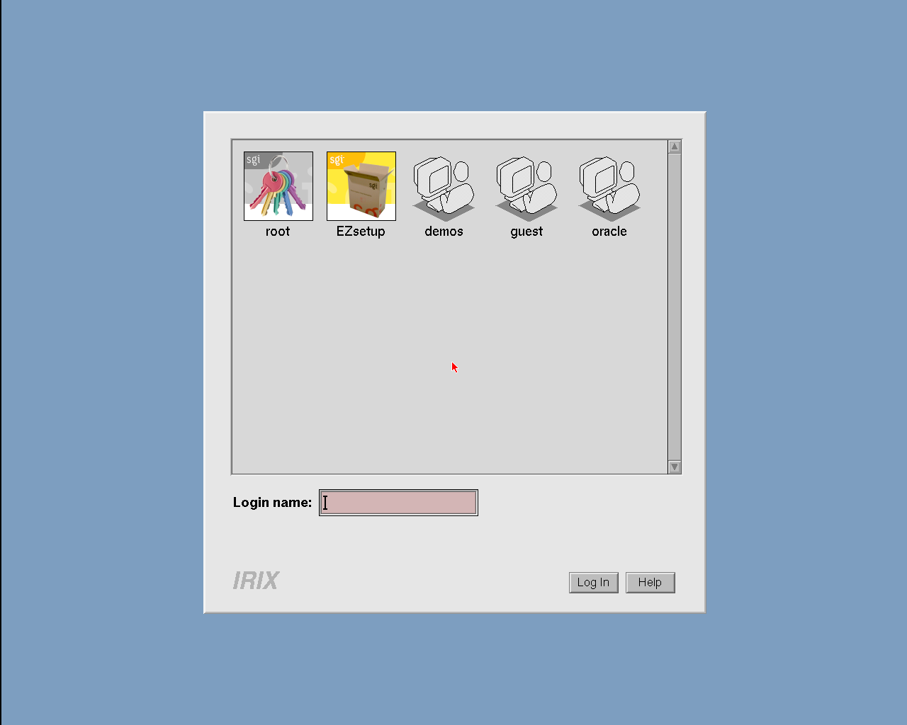
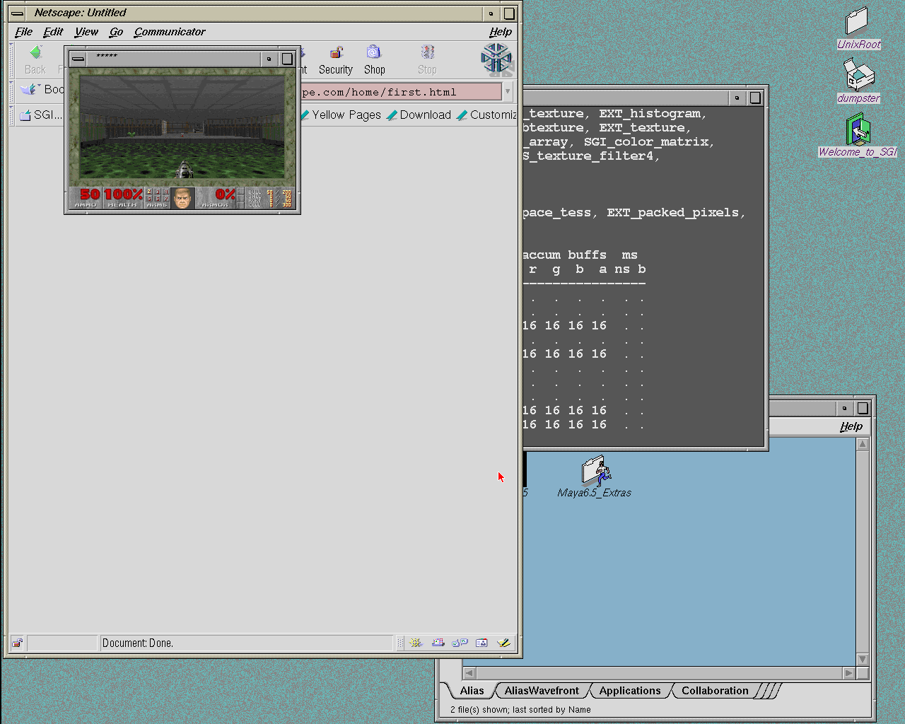
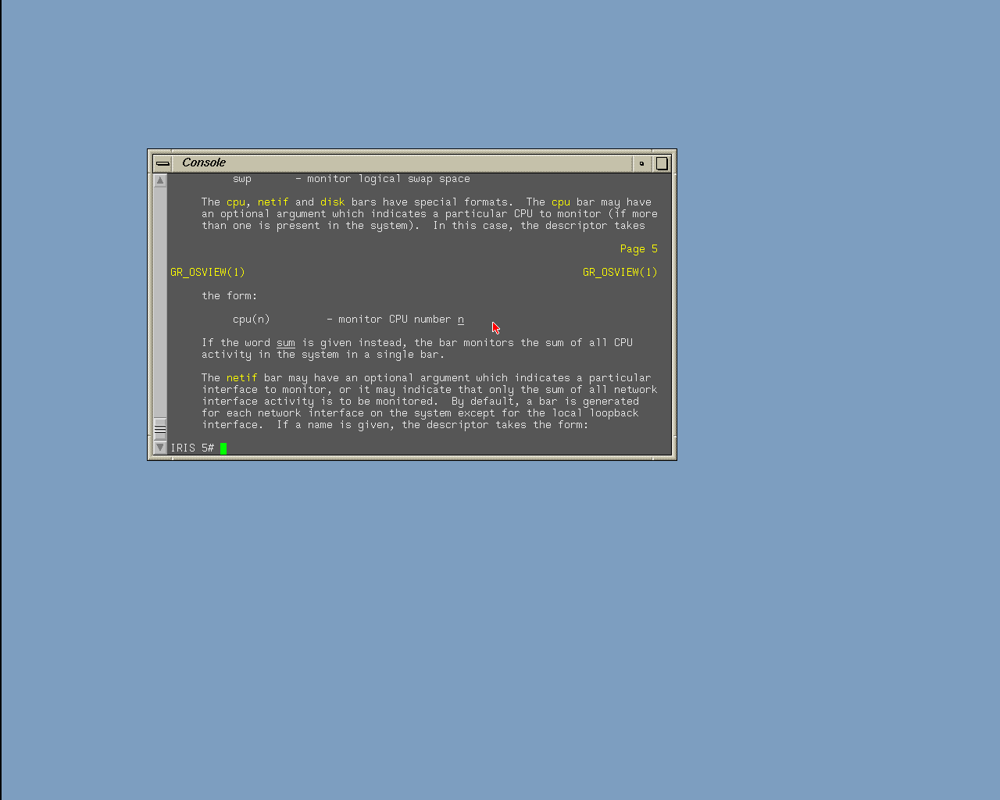
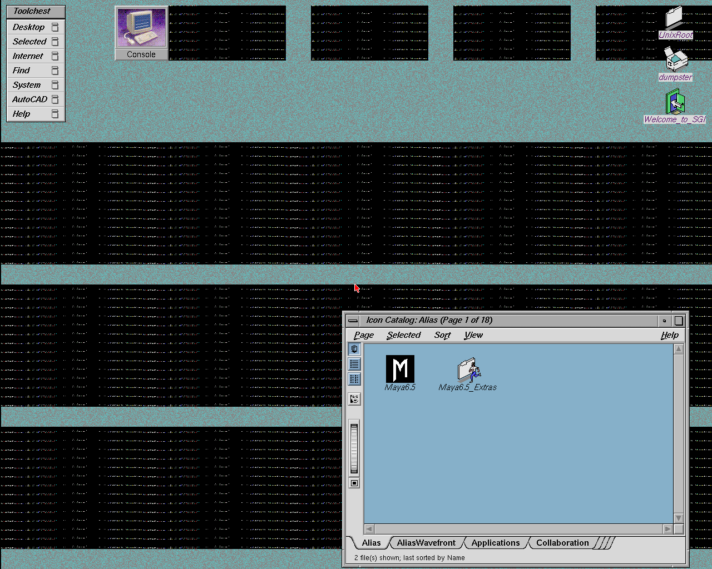
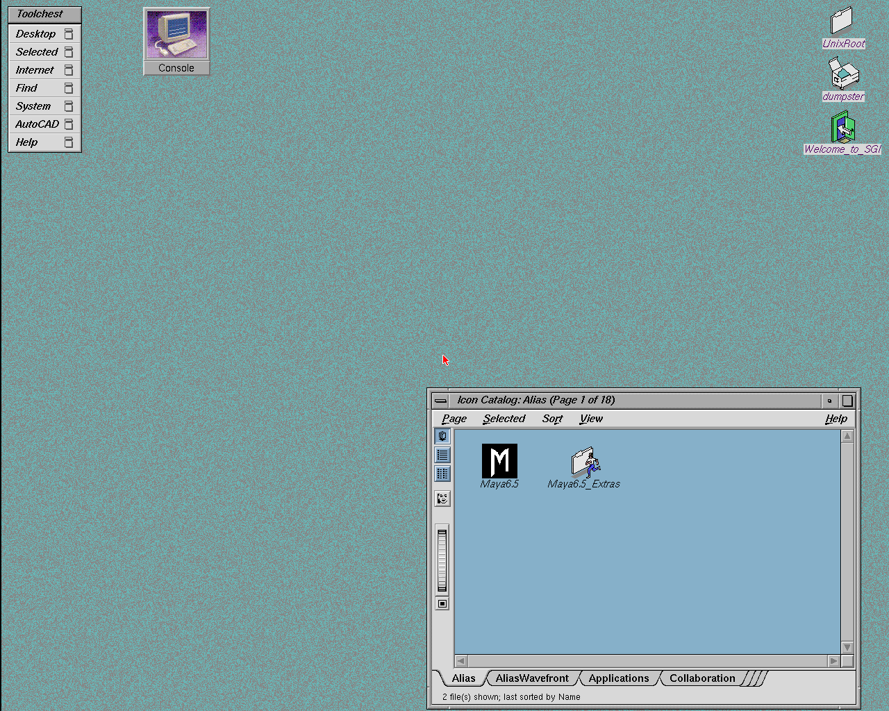
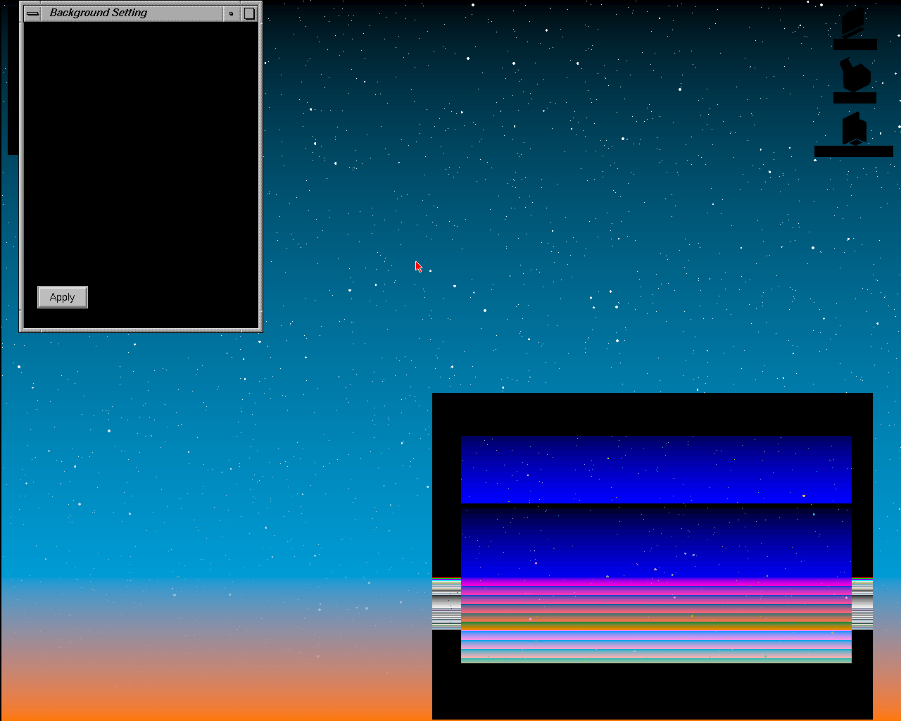
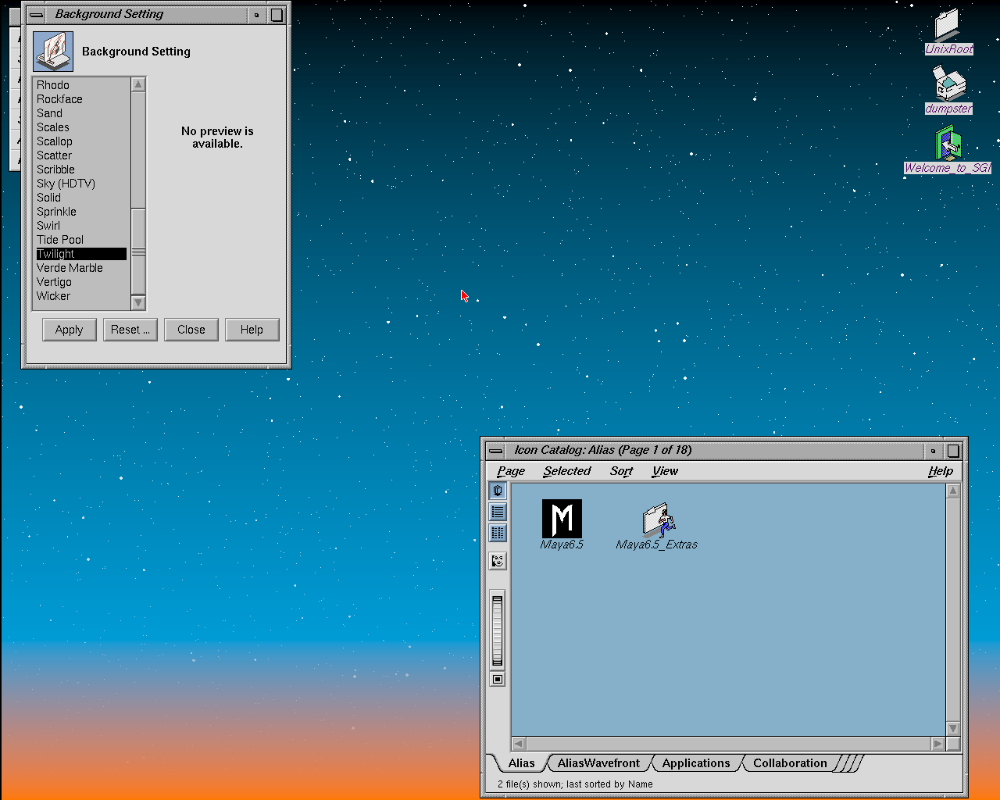
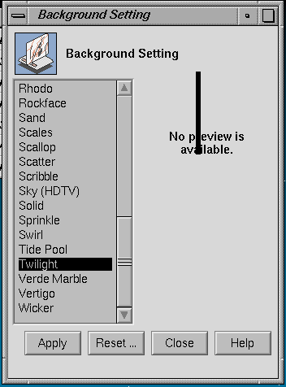
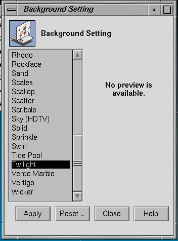

Newport on henry: ARM-served graphics¶
Status (2026-10-18): working on silicon
IRIX 6.5 on the Ultra96-v2 probes an Indy graphics board in GIO slot 0, Xsgi brings up xdm and the 4Dwm desktop, and the PS/2 keyboard and mouse work. Both board types run: XL8 (8-bit) and XL24 (24-bit, see XL24). The desktop wallpaper, login icons and Doom are drawn through MC VDMA (memory → GIO) on the PL. Open items are listed under Known issues.

xdm login, captured from the board's Newport display. The user icons are image data the X server sends with MC VDMA (mode0x50, memory → GIO).

4Dwm with Netscape, a console and Doom running in a window (big-core bitstream7d953110). Doom uses VDMA heavily for its frame blits.

The first PS/2-enabled silicon run (2026-10-16): a console window on the XL8 desktop.Design¶
IRIX sees an Indy graphics board (REX3 and its DCB devices: VC2, XMAP9, CMAP, RAMDAC) at
0x1f0f0000. The board itself is software on an ARM core: the same sgi_newport model
indysim uses (a condensed MAME newport.cpp plus span
kernels). The PL part is deliberately generic -- an ARM-served GIO window -- so the same
infrastructure carries other devices: it already serves the IOC2 8042 keyboard/mouse
controller, and IMPACT's HQ3 command FIFO would be the same pattern at higher volume.
PL (rtl/gio_window.sv) |
ARM (gio_service.h / newport_arm.cc in the driver) |
|
|---|---|---|
| Stores to the window | append a record to a capture ring in the staging region; posted | apply in order to the device model |
| Loads from the window | hold the CPU load; append a READ record behind all earlier stores; wait for the answer | drain the ring up to the request, run the read (side effects included: STATUS read acks retrace), post the 64-bit answer |
| MC VDMA (memory → GIO) | dma_engine channel CH_V reads memory coherently and appends VDMA STORE records between BEGIN/END markers |
applies them as host-data writes; reports REX3 busy between the markers |
| Interrupts | drive INT3 local1_src (bit 7 = VRETRACE) and mappable bit 4 (8042) from an ARM-written level register |
decide when lines rise and fall (vblank timer, keyboard/mouse data) |
| Flow control | ring full: hold the CPU access until the ARM frees space | doorbell its consumer index |
| Presentation | -- | the framebuffer goes to an X display on the board (--newport-display :2), viewed over VNC |
CPU store 0x1f0f0xxx ─► gio_window ─► capture ring (staging) ─► ARM: sgi_newport ─► framebuffer ─► X :2 / VNC
CPU load 0x1f0f0xxx ─► gio_window ─► READ record ────────────► ARM: answer ─► AXI-Lite ─► CPU
MC VDMA memory ─► dma_engine CH_V ─► VDMA STORE records ─────► ARM: REX3 host data
vblank / kbd / mouse ◄─ local1_src[7] / mappable[4] ◄─ ARM-written IRQ levels ◄── ARM timers, X events
Ordering is the only subtle part: a read must observe every earlier write, so read requests go
through the same ring, and the ARM answers only after draining it. The CPU is blocked on the load
meanwhile (device loads already block in henry). One exception (driver, 2026-10-20): a held REX3
STATUS read with a backlog of VDMA records ahead of it is answered early when the nearest VDMA
marker before it is an END (gio_answer_early() in the driver's gio_service.h). Without this,
the retrace handler's STATUS load waited behind hundreds of VDMA records. All reads go to the ARM: about 99.9% of accesses
are posted writes, drawing paths do not read, and the remaining reads (probe, DCB readback,
STATUS, pixel readback) have side effects or need the framebuffer.
Interface (RTL revision 0x20261018)¶
The RTL revision (AXI-Lite 0x3F) must match the driver: the driver checks it at startup
(HENRY_RTL_REV). Revision 0x20261018 added the VDMA record types and markers.
Windows. REX3 at 0x1f0f0000–0x1f0f1fff (8 KB, including its GO alias at +0x800), and the
IOC2 8042 (data 0x1fbd9843, command/status 0x1fbd9847). The rest of GIO space bus-errors
(see Bus errors).
Capture ring. Staging 0x1E200000, 65536 records × 16 B. Little-endian record (byte i =
bits [8i+7:8i]):
| bytes | field |
|---|---|
| 0–3 | {type[31:30], mask[29:22], dwoff[21:0]}. Type 0 = STORE, 1 = READ, 2 = VDMA STORE (mask 0xff), 3 = VDMA MARKER (mask bit 0: 1 = BEGIN, 0 = END of one transfer). dwoff[21] selects the device: 0 = REX3 window, 1 = 8042. mask bit i = lane i valid |
| 4–7 | recno: running record number, starting at 1, assigned when the record is queued (so the ring stays in recno order); the answer-sequence register resets to 0, so 0-based numbering could falsely complete a first-record READ |
| 8–15 | lane[0..7]: lane i = the byte at window offset dwoff*8 + i |
- Producer index
prod(records written) at staging+0x60, published after every READ record, whenever the queue drains, and periodically. Recordnlives in slot(n−1) mod 65536. - Ring full (
assigned − cons == 65536): the PL holds the CPU's access. The DMA is never held (see VDMA). - One memory port (arbiter master 2), on AXI lane 1 with the DMA engine; the CPU has lane 0 to itself, so ring writes do not queue behind CPU misses. When four records are queued and the next slot is 64-byte aligned they go out as one 64-byte burst, otherwise one 16-byte write each. Staging addresses are not snooped.
AXI-Lite (S00):
| reg | ARM write | read (debug) |
|---|---|---|
0x20 |
read answer lanes 0–3 (lane 0 in bits 7:0) | prod |
0x21 |
read answer lanes 4–7 | {pending, pending_recno[30:0]} |
0x22 |
answer sequence = the READ record's recno; completes the held load (write 0x20/0x21 first) |
VDMA usage: {non-fill starts, last mode} |
0x23 |
cons: records consumed |
VDMA usage: {fill starts, other DMA register writes} |
0x2A |
IRQ levels: bits 7:0 → INT3 local1_src (7 = VRETRACE); bit 8 → mappable 4 (8042) |
-- |
0x24 / 0x02 |
write 0x24[4:0]: graphics counter select ([4:1] counter, [0] high half) |
read 0x02: the selected 48-bit counter half |
The graphics counters (rtl/henry_soc.sv, 2026-10-20) are free-running: 0 cycles, 1 CPU GIO
stores, 2 cycles a CPU GIO access is outstanding, 3 ring writer waiting on AXI, 4 ring writes,
5 VDMA busy, 6 VDMA waiting on a memory read, 7 VDMA record waiting on the ring, 8 VDMA records
accepted. They split where a Newport frame's PL-side time goes.
MC VDMA (memory → GIO)¶
IRIX does not use VDMA to reach the xdm login (0 transfers), but every image put after it does:
the wallpaper tiles, the login icons, and application blits (Doom). All of it is mode 0x50 --
memory → GIO, upward. Without VDMA the wallpaper was REX3 drawing noise from an empty host-data
path.
- Engine: channel
CH_V(3) ofrtl/dma_engine.sv, the one DMA engine henry's devices share. Memory reads go through the coherent snoop shim, so no cache flush is needed. Pixel loads fetch whole 64-byte lines (one burst on AXI lane 1) into a line buffer. Each 8-byte group becomes aVDMA STORErecord. The CPU is never held for a transfer: an early version held CPU accesses during the DMA and deadlocked, because the held access kept the L1D from answering the DMA's snoops. Instead the transfer is bracketed by BEGIN/END markers, and the ARM behaves as REX3 does during a host-data DMA: it reports busy between the markers and applies CPU stores only after END. (In practice Xsgi waits for each transfer, so no CPU store has landed inside one.) - Translation: the MC DMA TLB (4 entries, 4 MB each, registers
0x180–0x1bc) plus a leaf PTE load, with the last page cached. The PTE page isTLB_LO[25:6] << 12. MAME masks the entry with0x003fffc0, which dropslo[25:22]. That only works while the page tables sit below PA0x10000000: IRIX's sit higher, so MAME (and our first version) read zeros and sent every page to PA 0. The fix went into the RTL and indysim at the same time. - Completion: final
MEMADRwritten back;DMA_COUNT, zoom and stride exactly as indysim'sdma_perform; withDMA_CTLbit 4 set, completion raises INT3local0bit 4. - Not modeled: the GIO → memory direction, fill mode and the
0x2070start alias complete at once without moving data. IRIX has not used them so far.


indysim, same boot: wallpaper tiles with MAME's TLB_LO mask (left, every page translated to PA 0) and withlo[25:6] (right, matches the real-X reference).
Validation: sim/vdma_test (the RTL engine against a copy of indysim's dma_perform, 3000
random transfers × 6 seeds, 4 of 4 injected mutations caught); tests/vdma bare-metal in
henry_tb with GIOLOG=1 + check.py (39/39 doublewords, IRQ, CAUSE and MEMADR). DMA test
buffers must be at PA ≥ 0x08000000: the IP22 low alias at PA 0 is CPU-side only, so DMA there
reads zeros.
Two model bugs found on silicon¶
Both bugs were in the Newport model (inherited from MAME), not the RTL. Both fixes are in all
three copies of sgi_newport.cc: indysim, sim/newport and the driver.
REX3 CID match (window composition). Switching the wallpaper to Twilight turned windows
black and smeared the icon catalog. Xsgi marks the root window's visible region with clip ID 1
(auxiliary-plane bits [1:0]), and Twilight draws full-screen with CLIPMODE CID match 2, so the
CID test is what keeps the wallpaper behind the windows. The model had no CLIPMODE[12:9] CID test.
The first fix covered clip_pass but missed the separate clip copy in the span_fast kernel; time
bisection of the replayed trace found the second site.


Left: captured on the board before the fix. Right: the board's ownNEWPORT_TRACE replayed
through the fixed model (indysim tools/np_replay).
Per-plane write mask (the black bar). A black bar appeared in the Background panel's preview
area. Pop-up-plane writes (planes = 5) replicate across byte lanes, and without a per-plane mask
they landed in the overlay byte (Xsgi uses WRMASK 0xffffff). Fix: plane_mask() in
sgi_newport.hh (CID 0x33, PUP 0xcc, OLAY 0xffff00), applied in rb_store and span_fast.
Replay changes only the bar.


Replayed board trace: CID fix only (left) and with the plane mask (right).Keyboard and mouse¶
The IOC2 8042 is served by the ARM through the same window (dwoff[21] = 1), with its interrupt
on INT3 mappable bit 4. PS/2 mice are relative, so the driver turns X pointer motion into deltas.
Motion with unchanged buttons is coalesced into the newest unsent packet, and the pointer is
re-synced at screen edges (EDGE_PUSH). Turning off pointer acceleration in IRIX makes tracking
much better, but the IRIX cursor and the host pointer still drift apart over time (see
Known issues).
XL24¶
IRIX supports both board types. The XL24 (24-bit) takes its video timing from the monitor
environment variable, so the ARCS shim must answer GetEnvironmentVariable("monitor") with
"h" (henry_arcs fb449a50, r9999 c2a5898); without it IRIX picks 1024×768. Run the driver
with NEWPORT_XL24=1. The CMAP revision byte encodes the board, as the IP24 PROM decodes it:
bit 7 = 8-bit board, bits 6:4 = board revision, bits 2:0 = CMAP revision. XL8 uses 0xa1. XL24
uses CMAP0 0x22 (24-bit, board revision 2) and CMAP1 0xa2, whose upper nibble is the
monitor-ID sense (0xa = 1280×1024). The PROM trusts the 8/24-bit flag only at board revision
≥ 2, so MAME's XL24 value 0x02 made it report "Indy 8-bit" (henry 635a15d, driver 629eb2e,
2026-10-25). The framebuffer (RB2) pitch is 1344 pixels and its height 1088.
Debugging the model¶
Rendering bugs are found offline, not on the board:
- On the board,
NEWPORT_TRACE=<file>records every REX3/DCB access the guest makes, with timestamps. tools/np_replayin indysim replays the trace through the model.NEWPORT_PPMwrites the framebuffer,NP_AUXDUMPwrites the auxiliary planes (CID/PUP/overlay), and--hi <monotonic ns/10>stops at a point in time.NEWPORT_DRAWCAPlogs the words each GO touches, which pins a bad pixel to one command.- Bisect on time until the first wrong frame, then on the command that draws it.
The replay is bit-exact on x86 and the A53, so a fix that makes the replay right is right on the board.
Running it¶
- Bitstream with
gio_window+ VDMA (RTL revision0x20261018) and a matching driver (mips-axifrom the driver's Newport branch). Start the guest with--newport-display :2(andNEWPORT_XL24=1for 24-bit). - Current recommendation:
NP_NO_GFXBUSY=1, see below.
Building without graphics¶
DISABLE_NEWPORT (e.g. SV2V_DEFINES="ENABLE_DEBUG_WATCHPOINT DISABLE_NEWPORT" ./gen_mipscore.sh)
builds henry as an Indy with no graphics board:
- the REX3 window is not decoded, so it times out like the rest of empty GIO (a bus error
with
CPUCTRL1.ABORT_EN); IRIX and Linux probe the slot, find nothing, and come up on the serial console; - the Newport interrupts (INT3 local1, including VRETRACE) are tied off, so the ARM model cannot raise them;
- MC VDMA is removed, since only Newport uses it: memory → GIO starts complete at once
without moving data, and
dma_engine's VDMA channel is pinned idle so synthesis drops it; - the 8042 keyboard/mouse still goes through
gio_window.
The RTL revision is unchanged, so the same driver runs both builds; leave off
--newport-display.
Known issues¶
- GFXBUSY: reporting REX3 busy during VDMA (the faithful behaviour) correlated with IRIX
bus-error panics. Runs with
NP_NO_GFXBUSY=1have been stable; the root cause is not found. - Cursor drift: see Keyboard and mouse. The planned fix is to close the loop on the VC2 cursor position.
- VDMA lane packing for an unaligned start (
memadr & 7=gioadr & 7≠ 0) follows indysim (packed from lane 0) and has not been checked against hardware. - Speed: the A53 model is about one core at ivview rates (~5.85 µs per GO, 87% of it pixel
work). Doom over Newport is slower than the same desktop forwarded as X11 over the network, and
topshows most of the time in Xsgi.
History and decisions¶
- 2026-10-02: feasibility study (
NEWPORT_FEASIBILITY.md). Serving every access on the ARM was judged too slow; posted writes plus an ARM-side model was judged feasible. - 2026-10-16 (dsheffie): all reads ARM-served to start; presentation as an X11 window on the board;
the model is copied into the project (as
ring_service.his shared today). First silicon desktop on the TINY_CORE build, then PS/2. - 2026-10-17: MC VDMA channel, TLB_LO fix, ring markers (revision
0x20261018), XL24. - 2026-10-18: CID match and plane-mask fixes; big-core bitstream with Newport; Doom.
- 2026-10-20: early answer for REX3
STATUSreads and a count-based absent-Presenter DCB timeout (driver2a46345, henryf1c75e2). Graphics-path performance in the RTL: two AXI lanes (CPU alone on lane 0), 64-byte bursts for VDMA loads and ring writes, graphics counters. Every henry bitstream since has these; committed as henryeea6ecb(RTL revision unchanged). - 2026-10-25: XL24 CMAP revisions
0x22/0xa2, so the PROM reports "Indy 24-bit".